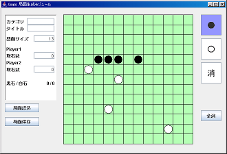

局面生成モジュールの操作方法
■ 局面生成モジュールの機能
- 盤面上に、黒石と白石を自由に置いていく (交互に置かなくてもよい)
- 各プレイヤの取石数を自由に設定する (既に石を取った状態にできる)
- 作成した局面に名前を付けて保存する (後で区別がつくように適切な名前を付ける)
- 保存した局面は、対戦実行モジュールの初期局面として利用することができる
■ 局面生成モジュールの使用法

● 局面生成モジュールの起動方法
- Gogoシステムのルートにある create.bat を実行する。
● 局面生成モジュールの操作方法
◎ 局面編集
○ 盤面編集
- 盤面に置きたい石(駒)の種類を、右のボタンで選択する。
- 盤面のマス目をクリックすると、選んだ種類の石(駒)が置かれる。
- 置いた石を取り除くには、消ボタンを選択した状態でそのマス目をクリックする。
○ 取石数編集
- 左のパネルの取石数のフォームで取石数を設定する。
- 取石数は、0から8の範囲の偶数でしか設定できない。
- 奇数の場合は、1つ少ない偶数に補正されて保存される。
- 範囲外の値は、0に補正されて保存される。
◎ 局面の保存
- 局面保存ボタンを押すと、現在編集中の局面を保存できる。
- ファイル保存ダイアログで、名前を付けて保存する。
- 既にあるファイル名を指定すると、上書きの確認ダイアログが出る。
◎ 局面の読込
- 局面読込ボタンを押すと、保存した局面を読み込む。
- ファイル選択ダイアログから、設定ファイルを読み込む。
- 新たな局面の読込時に、現在編集中の局面は破棄される。